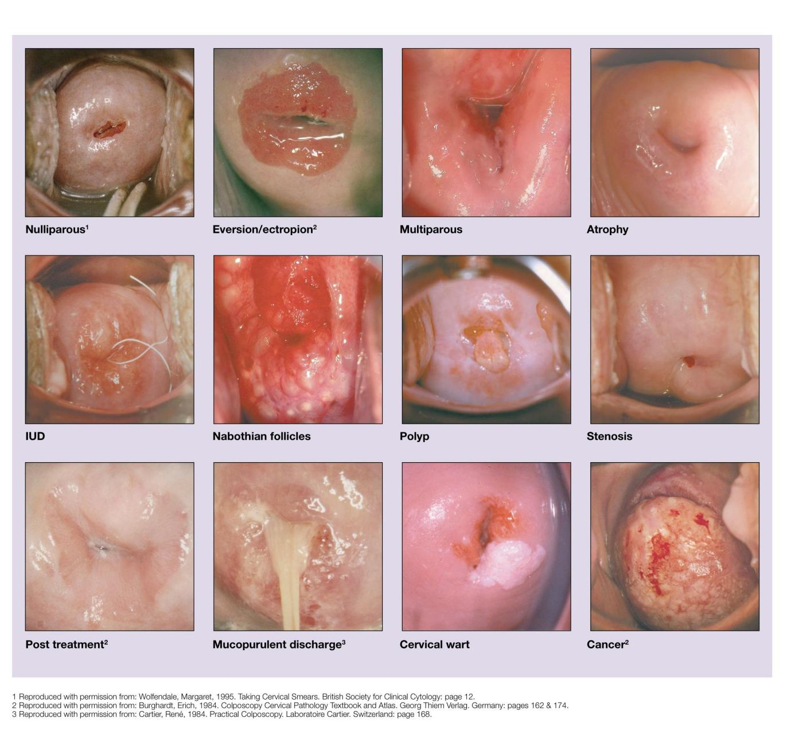

POST-COITAL BLEEDING —
Your next patient is a 35 year old lady who has presented to your general practice complaining of post coital bleeding.
Task:
- Take history from the patient
- Physical examination will appear on the screen
- Explain your diagnosis and differentials to the patient
Differential List for the Exam
- Cervical problems
- Cervical cancers
- Cervical ectropion
- Cervical polyps
- Cervicitis
- Cervical cancers
- Endometrial cancer
- Endometrial polyps + Fibroids
- Infections (PID/STIs/vaginal infections)
- Atrophic vaginitis (lactational, menopausal, premature ovarian failure)
- Traumatic causes
- Violent sex
- Lacerations after delivery, episiotomy
- Direct trauma
- Violent sex
- Dermatological conditions
- Dermatitis, lichen planus, lichen sclerosus
- Dermatitis, lichen planus, lichen sclerosus
- IUDs and other contraceptions
3. HISTORY STRUCTURE
A. Open-ended Question
- “How can I help you today?”
- “Can you tell me more about your bleeding?”
B. Address Concern
- Reassurance statement.
4. EXPLORE THE BLEEDING
A. Timing Box
- How many episodes of bleeding?
- How long has this been happening?
- Is it getting worse?
B. Characteristics of Bleeding (CCVO)
- Color: bright or dark
- Contents: clots, discharge, tissue
- Volume: number of pads
- Are pads fully soaked?
- Odour (thinking of PID)
C. Effect on Life
- How is this affecting you/your life/relationships/sexual activity?
5. FIVE Ps
1. Period
- LMP
- Excessive bleeding?
- Heavy bleeding?
- Excessive pain during periods (menorrhagia + dysmenorrhea)
- Any pain or bleeding between periods?
2. Partner
- Are you sexually active?
- Ask post-coital bleeding (case)
- Ask dyspareunia> pain on sex
- STI structure:
- Stable relationship?
- Multiple partners ever?
- Safe sex? Condoms?
- Previous STIs?
- Stable relationship?
- Symptoms: discharge, fever (optional placement)
3. Pills
- Any contraception?
- Think especially IUD
- Also other contraceptions.
4. Pregnancies
- Any recent delivery?
- Looking for tears/cuts from delivery causing bleeding on sex
- Looking for tears/cuts from delivery causing bleeding on sex
- Breastfeeding? (atrophic vaginitis)
- Ask pregnancy history routinely (fits all cases)
5. Pap Smear
- Are you up to date with cervical screening test?
- Have u received Gardasil vaccination?
6. DIFFERENTIALS BOX (HISTORY QUESTIONS)
1. Cervical Cancer
- Unusual/abnormal vaginal discharge?
- Loss of weight?
- Loss of appetite?
- Lumps and bumps?
- Tiredness?
- Low back pain?
2. PID / STIs
- Fever?
- Vaginal discharge?
- Abdominal pain?
- (Sexual history already done)
3. Atrophic Vaginitis
- Vaginal dryness?
4. Dermatological Conditions
- Rash/redness on private parts?
- Any ulcers?
- Itchiness?
5. Traumatic Causes
- Can I ask about your relationship?
- Can i ask a Sensitive question (optional)
- “Have you ever been subjected to violent sex?”
6. SADMA
- Smoking (risk factor for cancers)
- Medications (blood thinners not critical but optional)
Past medical history
Family history
PHYSICAL EXAM FINDINGS
- Bimanual exam: normal
- Cervix: ectropion

- History:
- Last cervical screening 5 years ago
- Has not received Gardasil vaccination
- Last cervical screening 5 years ago
- Supports cervical problem on screening questions.
8. DIAGNOSIS EXPLANATION
- “Most likely you have a condition called cervical ectropion.”
- Easy explanation:
- “The inner layer of the cervix or the mouth of your womb has rolled out and expanded.”
- “The inner layer of the cervix or the mouth of your womb has rolled out and expanded.”
Reasons
- Bleeding after sex (main feature)
- She hasn’t done cervical screening for quite a while
- Exam shows the red ring confirming ectropion
DIFFERENTIALS EXPLANATION TO PATIENT
(Listed exactly as taught)
- Cervical problems at the beginning, mainly cervical cancer
- Cervical polyps
- Endometrial/uterine problems:
- Endometrial cancers
- Polyps
- Fibroids
- Endometrial cancers
- Infections
- Dermatological conditions
- Traumatic causes
- Atrophic vaginitis
- IUDs and contraceptions
ADDITIONAL EXAM TEACHING
- Most famous cervix seen in exam = ectropion
- If ugly, irregular lesion with superficial bleeding → think malignancy → colposcopy
